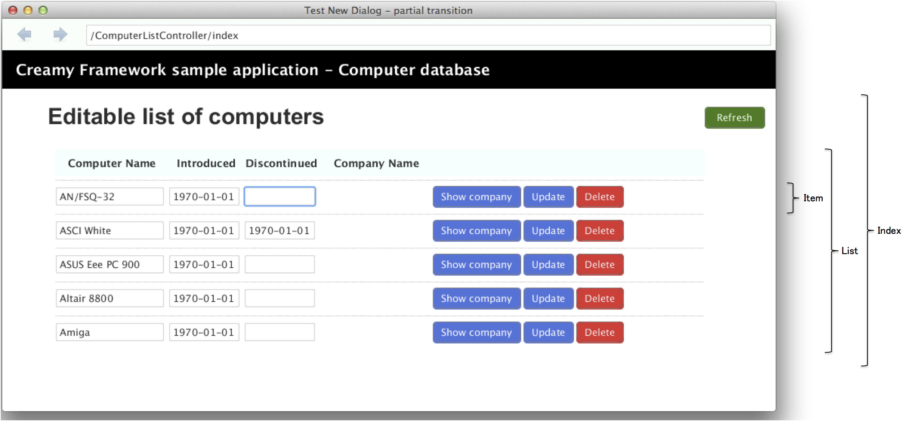

Activityの中からリクエストを発行して、画面の一部を変更する、あるいは、データの取得、更新を行いたい場合があります。
これは、Webアプリケーションでの、Ajaxによく似ています。ここでは、Activity内からのリクエスト方法について説明します。
サンプルを見ながら機能を見ていきましょう。以下にサンプルの画面イメージを示します。
機能はいたってシンプルです。
この画面は部分テンプレートを使って、3つのFXMLで構成されています。構造は以下のとおりです。
Index : root. Refreshボタンを含む
└── List : ItemのParent
├── Item : ひとつひとつのComputerを表示
├── Item : 同上
└── ... : ...
これを行うには、以下3つのリクエストが必要となります。
上記はAcitivity内にJavaコードで記述します。では、次に記述方法を見て行きましょう。
ここでは、IndexからListを取得するリクエストが必要となります。
記述例 - Index.java
1 2 3 4 5 6 7 8 9 10 11 12 13 14 15 16 | @Template(Main.class)
public class Index extends AvailableActivity {
@FXML private AnchorPane listArea;
@FXML private void refresh(ActionEvent event) {
requestActivity("/ComputerListController/list/0/name/asc")
.onSuccess(new CallBack<Activity>() {
@Override
public void call(Activity activity, Status status) {
listArea.getChildren().clear();
listArea.getChildren().add(activity.getScene());
}
})
.execute();
}
}
|
refreshメソッドはRefreshボタンのHandlerになっています。(@FXMLアノテーションが付加されているのが分かります)
Activityをリクエストする場合は、reqestActivityメソッドを利用します。このメソッドはスーパクラスAcitivityで定義されています。
では、コードの中身を見て行きましょう。
少し変わった記述になっていますが、その理由は、requestActivityでは実際にはRequestオブジェクトを生成しているためです。 onSuccess()、execute()はRequestクラスのインスタンスメソッドです。これがメソッドチェーンによって繋がっています。
こでは、以下のリクエストが必要となります。
| Show Companyボタン | Computerの属するCompanyの名称をStringで取得するリクエスト |
| Updateボタン | Computerの属性を更新するリクエスト |
| Deleteボタン | Computerを削除するリクエスト |
少し長くなりますが、全コードを見て行きましょう。
記述例 - Item.java
1 2 3 4 5 6 7 8 9 10 11 12 13 14 15 16 17 18 19 20 21 22 23 24 25 26 27 28 29 30 31 32 33 34 35 36 37 38 39 40 41 42 43 44 45 46 47 48 49 50 51 52 53 54 55 56 57 58 59 60 61 62 63 64 65 66 67 68 69 70 71 | public class Item extends AvailableActivity {
@FXML private Integer computerId;
@FXML private TextField computerName;
@FXML private TextField introduced;
@FXML private TextField discontinued;
@FXML private Label companyName;
@FXML private Label message;
private List parent;
@Override
public void initialize() {
parent = (List)getParent();
messageAnimation.setNode(message);
}
@FXML private void showCompany(ActionEvent event) {
String path = "/ComputerListController/testCompanyName/" + computerId;
requestData(path)
.onSuccess(new CallBack<Object>() {
@Override
public void call(Object data, Status status) {
companyName.setText(data.toString());
}
})
.execute();
}
@FXML private void updateComputer(ActionEvent event) {
Map<String,Object> params = new HashMap<String,Object>() {{
put("id", computerId);
put("name", computerName.getText());
put("introduced", introduced.getText());
put("discontinued", discontinued.getText());
}};
requestData("/ComputerListController/updateComputer")
.params(params)
.onSuccess(new CallBack<Object>() {
@Override
public void call(Object data, Status status) {
message.setText("updated");
messageAnimation.play();
}
})
.onFail(new CallBack<Object>() {
@Override
public void call(Object data, Status status) {
message.setText("update failed");
}
})
.execute();
}
@FXML private void deleteComputer(ActionEvent event) {
String path = "/ComputerListController/deleteComputer/" + computerId;
requestData(path)
.onSuccess(new CallBack<Object>() {
@Override
public void call(Object data, Status status) {
messageAnimation.setOnFinished(new EventHandler<ActionEvent>() {
@Override
public void handle(ActionEvent t) {
parent.removed(Item.this);
}
});
message.setText("deleted");
messageAnimation.play();
}
})
.execute();
}
}
|
Dataをリクエストする場合は、reqestDataメソッドを利用します。このメソッドはスーパクラスAcitivityで定義されています。
showCompanyメソッド (16行目)
このメソッドでComputerの属するCompanyの名称を取得して、Labelを書き換える処理を行っています。ではコードを見て行きます。
updateComputerメソッド (28行目)
このメソッドでComputerの属性を更新します。